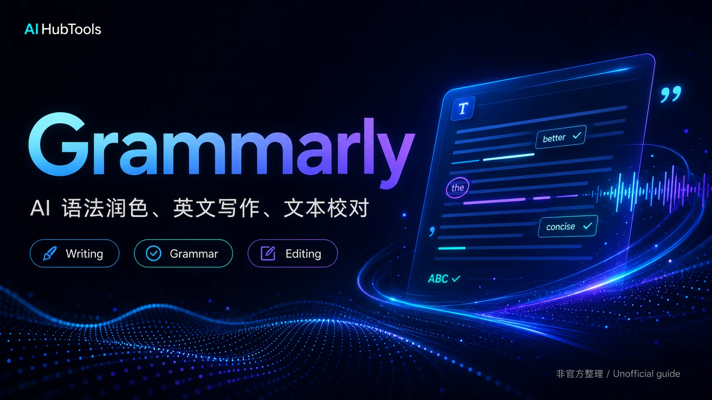

Grammarly: AI 写作教练
从基础的语法纠错到高级的风格建议，再到最新的生成式 AI 功能，Grammarly 正从一个“语法警察”进化为全能的“写作教练”，帮助你自信地完成每一次书写。

Grammarly：超越基础语法检查
Grammarly 是全球最知名、用户量最大的在线写作辅助工具。它不仅仅是一个简单的拼写和语法检查器，更是一个全面的AI写作伙伴。通过浏览器插件、桌面应用和移动键盘，Grammarly 几乎可以在你进行任何文本输入的场景中提供实时反馈和建议。
它的核心价值在于，通过AI算法分析你的文本，从四个维度提升你的写作质量：
- 正确性 (Correctness): 修正拼写、语法和标点错误。
- 清晰度 (Clarity): 改进句子结构，使其更易于理解。
- 参与度 (Engagement): 提供更生动的词汇，避免重复。
- 得体性 (Delivery): 确保你的语气符合预设的受众和目标。
核心功能解析：不仅仅是红线
1. 实时语法与拼写检查
这是 Grammarly 的基础功能，也是其安身立命之本。它的准确性经过了十多年的迭代和亿万级用户数据的训练，在业界处于领先地位。无论是常见的时态错误，还是易混淆的词汇（如 affect/effect），它都能精准识别并提供修正建议。
2. 风格与语气建议 (Premium)
这是区分免费版和付费版的核心功能之一。你可以为你的文档设定目标（例如，受众是“专家”，语气是“自信”，场景是“学术论文”），Grammarly 会据此提供更高级的建议。它可能会建议你将一个被动语态的句子改为主动语态以增强说服力，或者将一个过于口语化的词汇替换为更正式的表达。
3. 抄袭检测 (Premium)
对于学生、学者和内容创作者来说，这是一个至关重要的功能。Grammarly 会将你的文本与 ProQuest 的数据库和数十亿网页进行比对，高亮显示可能存在抄袭风险的段落，并提供引文来源建议，帮助你确保内容的原创性。
生成式 AI：GrammarlyGO
面对 ChatGPT 等大模型的冲击，Grammarly 迅速推出了自己的生成式 AI 功能——GrammarlyGO。它并非要取代你的写作，而是作为“催化剂”和“优化器”，无缝集成在你现有的工作流中。
核心理念： GrammarlyGO 旨在理解你的写作“上下文”，在你需要的地方提供快速、相关的 AI 支持，而不是让你跳转到一个全新的聊天界面。
你可以通过点击输入框旁边的绿色小图标来激活 GrammarlyGO，它能帮你：
- 快速构思： 输入“帮我写一封邮件，向客户催要逾期款项，语气要坚定但礼貌”，它能迅速生成一封得体的邮件草稿。
- 一键改写： 选中你写的句子，让它帮你变得“更简短”、“更专业”或“更自信”。
- 回复邮件： 在 Gmail 中，它可以自动分析收到的邮件内容，并为你生成几个不同语气的回复选项。
与直接使用 ChatGPT 相比，GrammarlyGO 的优势在于它对你当前写作环境的感知。它知道你正在写什么、给谁写，因此生成的建议往往更具相关性。
价格与方案：免费版够用吗？
| 版本 | 核心功能 | 价格 | 适合人群 |
|---|---|---|---|
| Free (免费版) | 基础语法、拼写、标点纠错。 | $0 | 对写作要求不高的普通用户，主要用于避免基础错误。 |
| Premium (高级版) | 包含免费版所有功能，外加风格与语气调整、清晰度重写、抄袭检测、词汇增强等。 | 约 $12/月 (年付) | 学生、职场人士、作家、任何需要频繁进行英文写作的用户。 |
| Business (商业版) | 包含高级版所有功能，外加团队风格指南、分析仪表盘、SAML 单点登录等。 | 约 $15/人/月 (年付) | 需要统一写作风格、进行品牌管理的企业团队。 |
结论： 对于任何需要认真对待英文写作的人来说，免费版是“不够用的”。Premium 版本提供的风格、清晰度和语气建议，才是真正能让你的写作水平产生质变的关键。我们强烈建议将 Premium 视为一项对个人专业能力的投资。
竞品对比：Grammarly vs. Wordtune
在 AI 写作增强领域，Wordtune 是 Grammarly 最有力的竞争者之一。
- Grammarly 的强项：在于“纠错”和“规范”。它的语法数据库更全面，规则更严谨，更适合用于需要确保“正确性”的场景，如学术论文、法律文件、商业合同等。
- Wordtune 的强项：在于“改写”和“润色”。它的核心功能是“Spices”，能够从不同角度（如举例、反驳、强调）丰富和扩展你的句子，更适合用于需要激发创意、探索不同表达方式的场景，如市场文案、博客文章等。
简单来说：先用 Grammarly 确保你的文章没有错误（60分 -> 85分），再用 Wordtune 让你的表达更精彩（85分 -> 95分）。 对大多数人来说，Grammarly 是更基础、更不可或缺的那一个。
总结：你的 AI 写作教练
在 AI 时代，写作能力不仅没有被削弱，反而变得更加重要。清晰、准确、有说服力的书面沟通，是你专业能力的延伸。
Grammarly，特别是其 Premium 版本，正是磨练这项能力的最佳工具。它像一位不知疲倦的私人教练，时刻在你身边，纠正你的错误、优化你的表达、拓宽你的思路。如果你希望在学术或职业生涯中，通过写作建立自己的信誉和影响力，那么投资 Grammarly Premium 将会获得极高的回报。